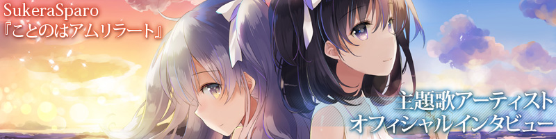

げっちゅぶろぐ様にて
主題歌アーティストオフィシャルインタビューを公開

「相良心さんとRYU(BLOOD STAIN CHILD)さん登場♡の巻」

今、注目の百合ゲー『ことのはアムリラート』が明日8月25日（金）に発売。
PCブランド・SukeraSparoより本作の主題歌を歌うアーティスト、相良心さんとRYU(BLOOD STAIN CHILD)さんへのインタビューが届きましたので、掲載いたします。
こんにちは！Kiel vi fartas?
みなさんは、ことのはアムリラートのデモムービーご覧いただけましたか？
主題歌「君へと続く道」を聴きながら、ことのはアムリラートの世界を垣間見ることができるのですが、本当に元気の出るかっこいい曲ですよね！
みなさんは、ことのはアムリラートのデモムービーご覧いただけましたか？
主題歌「君へと続く道」を聴きながら、ことのはアムリラートの世界を垣間見ることができるのですが、本当に元気の出るかっこいい曲ですよね！
今日はその主題歌を歌った相良心さんと作詞作曲編曲を行われたRYUさんにこの曲ができるまでのいろんなお話を伺いたいと思います。
よろしくお願いします！！
よろしくお願いします！！